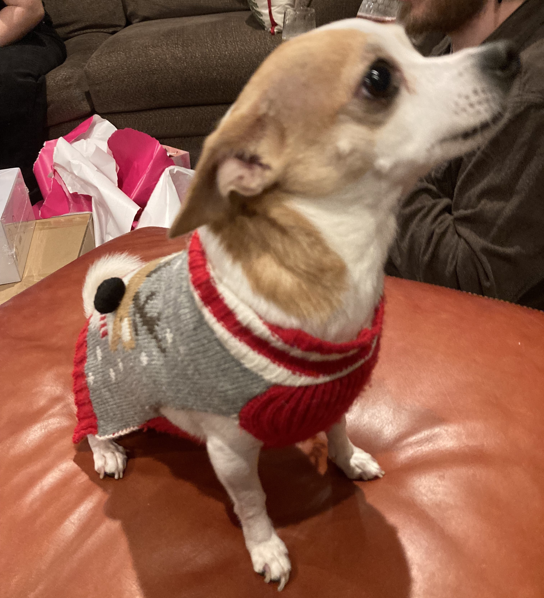
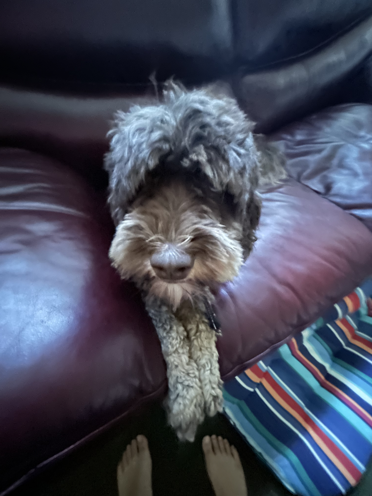
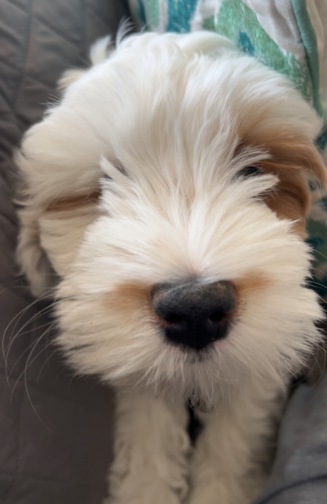
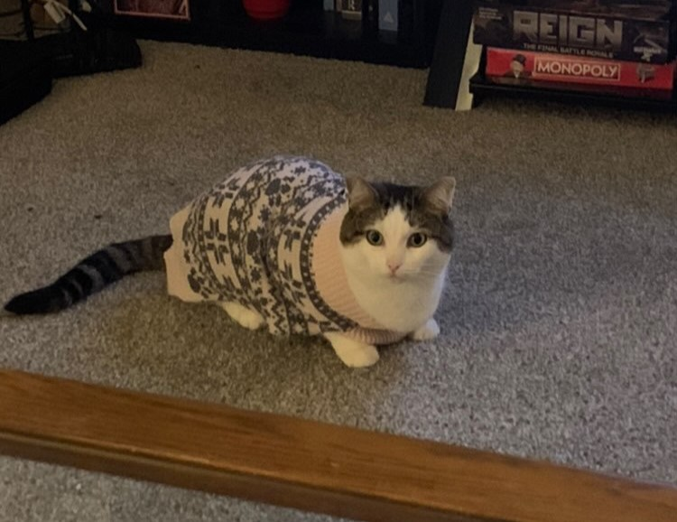

Piper
Piper is my girlfriend's chihuaha. She is 5 years old. Whilst her name is Piper, she is commonly refered to as peep, peewee, peepee, and other names of similar variety. Her full name is Piper Tiny S******** [last name redacted for privacy reasons]. She is a particularly small dog, being six pounds.
She like napping, paritcularly around heaters. She likes napping with her mother, and has long conversations with her father especially at night. SHe also enjoys running, chasing her family but also being chased.
Some of her favorite napping places:
- On her heating pad
- The kitchen heater
- Her "cave"
- Her little couch by the stairs
- Her mother's shoulders
Photo Gallery
Mocha
Mocha is a 3 year old brown labradoodle. She is my cousin's dog, and the first one they got. She's shy for a dog, and doesn't like to be cuddled or carried. She is a very polite dog, althought sometimes she gets a little rowdy when she argues with her brother dwight. Sometimes, when I haven't seen her in a while and she goes to the groomer in that timeframe, she looks very different and it's hard for me to recognize her.
More photos
Likes
- Eating
- Napping
- Beating her brother
Dwight
Dwight is a white labradoodle, and Mocha's little brother. He is less than a year old. Although he is young, he is about as big as Mocha now. Unlike his big sister, he is a rowdy dog, and isn't shy of cuddles. He likes jumping on new people, and enjoys being carried also. One of his favorite activities is bothering his sister.
When observing both Mocha and Dwight, it becomes very clear that Dwight is the younger brother, even if he is slightly bigger than Mocha. Whilst Mocha is polite and likes lounging around, Dwight likes jumping on guests and running around and bothering his sister. They fight very often, and Dwight almost always starts it. He is named after the office character, as the litter he is from all have names from characters from the office.
Dwight Media
Likes
- Bothering Mocha
- Tug of War
- Swimming
Plum
Plum is my girlfriend's sister's cat. She is about 3 years old. Common nicknames for Plum are plump, plumpy, lumpy, plum did, LSP (Little small plumpy), or these nicknames but pronunced with a 'w' instead of a 'l' (pwump). She, to be blunt, is very stupid (her words, not mine). She is a fat cat. She likes to go on walks whether that be on a leash or in her stroller.
Plumpy likes watching birds, especially woodpeckers. She even has a favorite bird, which is the redbelly woodpecker. She also gets carsick which is similar to other members of her family. She also likes loafing, as shown in the picture below. There she is loafing in her favorite place, which is the doorway between bedroom, bathroom, and entryway.
Plumpy Image Gallery
PlumTube
Likes
- Birdwatching
- Getting into small spaces
- Laying in inconvienent places.
- Walks
Bacon Q Dog

Bacon Q. Dog is a 9yr old labradoodle. He prefers to spend his days lounging among the three different beds/couches that his family has gifted him. He enjoys a walk or two around the neighborhood, as long as he can pretend that he doesn't see any of the other animals to avoid the embarrassment of not wanting to admit he has no wolf-like skills in chasing them.
At night just as the rest of the family is ready to relax, Bacon suddenly wants to release all of his energy. He will place his toys on a mini couch and frantically drag the couch around, giving his toys "a ride." There is also a lot of rolling. Lots and lots of rolling.
Photo Gallery


Likes
- Belly rubs
- Playing tug-of-war
- Sneaking onto the couch